1、数据类型对照表
易语言 火山 注释 字节型 字节 易语言字节有效值范围：0~255；
火山字节有效值范围：-128~127；
占用1个字节空间。
短整数型 短整数 有效值范围：-32768~32767，占用2个字节空间。 整数型 整数 有效值范围：-2147483648~2147483647，占用4个字节空间。 长整数型 长整数 有效值范围：-9223372036854775808~9223372036854775807，占用8个字节空间。 小数型 无 易语言的小数为单精度小数（float），其数值范围为-3.4E38～3.4E38（最长小数点后有6位小数），占用4字节。
火山中暂无此类型。
双精度小数型 小数 有效值范围：2.2250738585072014e-308~1.7976931348623158e+308（最长小数点后15位），占用8个字节空间。
注：火山中的小数为双精度小数（double）。
逻辑型 逻辑型 有效值为“真”或“假” 日期时间型 小数 在火山中无日期时间型，改用小数代替。 子程序指针 变整数 表示指针数据 文本型 文本型 表示字符串数据 字节集 字节集类 表示字节集数据 无 字符 宽字符有效值范围从0到65535，占用2个字节空间。
注：火山平台使用Unicode-16(即双字节统一码)字符编码格式。
1.1 字节型
在火山中叫字节（有符号字节），有效值范围从-128到127，占用1个字节空间。
如下图所示写法是错误的：
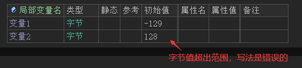
如果按照上图所写进行调试程序，最终会在火山输出栏提示如下错误：
在易语言中的“到字节()”方法，火山中可使用强制转换来操作。
易语言演示：
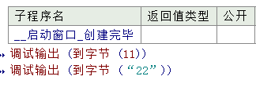
火山演示：
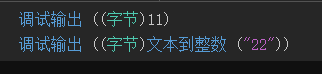
1.2 短整数型
在火山中叫短整数，有效值范围从-32768到32767，占用2个字节空间。
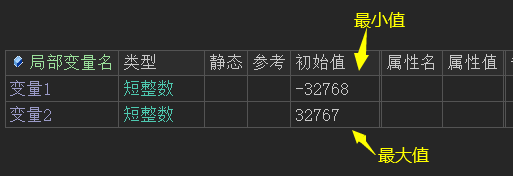
如果想要让短整数转换成整数或长整数，直接赋值即可，如下图：
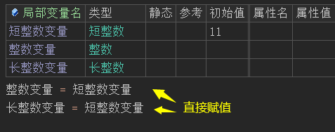
在易语言中的“到短整数()”方法，火山中可使用强制转换或“文本到短整数()”来操作。
易语言演示：
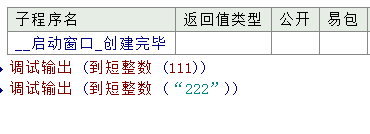
火山演示：
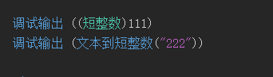
1.3 整数型
在火山中叫整数，有效值范围从-2147483648到2147483647，占用4个字节空间。
整数是处理和存储效率最高的数值数据类型，如果所欲处理的数值不包含小数部分，一般都使用本数据类型。
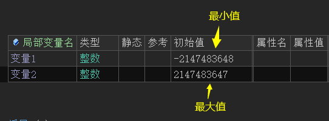
如果想要让整数转换成短整数需要进行强制转换操作，需要注意整数值的范围是否在短整数的范围之内，如下图所示：
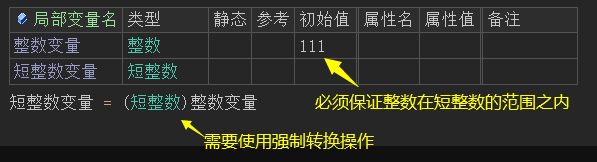
整数想要转换成长整数，直接赋值即可：
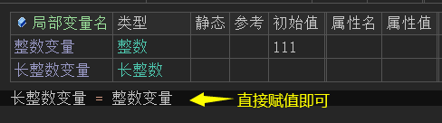
在易语言中的“到整数()”方法，火山中可使用强制转换或“文本到整数()”来操作。
易语言演示：
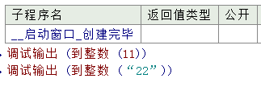
火山演示：
1.4 长整数型
在火山中叫长整数，有效值范围从-9223372036854775808到9223372036854775807，占用8个字节空间。
在软件开发过程中，如果数值超过了整数范围，那就必须使用长整数类型。如果在你不确定数值范围是否会超过整数，例如：两个较大整数的相乘，结果可以使用长整数类型来表达。
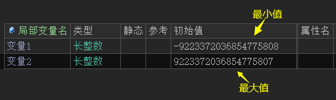
长整数转换成整数或短整数需要进行强制转换，且必须保证在目标类型的范围值之内，如下图所示：
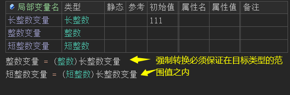
在易语言中的“到长整数()”方法，火山中可使用强制转换或“文本到长整数()”来操作。
易语言演示：
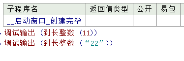
火山演示：
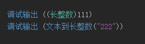
1.5 小数型
易语言的小数型为单精度小数（float），在火山中暂无单精度小数类型。
1.6 双精度小数型
在火山中的小数为双精度小数（double），有效值范围从2.2250738585072014e-308到1.7976931348623158e+308（最长小数点后15位），占用8个字节空间。
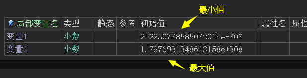
小数数值也可以通过强制转换，转换成整数、短整数或长整数，但是会丢失精度，如下图所示：
将一个初始值为1.6小数变量强制转换成整数。
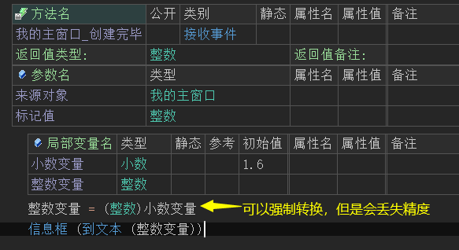
最终可以看到结果为1，小数部分的内容会全部丢失。
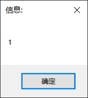
在易语言中的“到数值()”方法，火山中可使用强制转换或“文本到小数()”来操作。
易语言演示：
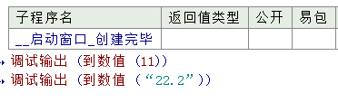
火山演示：
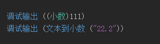
1.7 逻辑型
易语言的逻辑型和火山一致，也就是说有效值为“真”或“假”
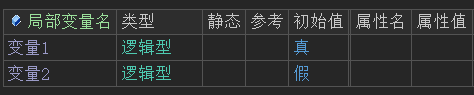
在火山中，逻辑值也可以转换为文本格式，使用“到文本()”进行转换。
当逻辑值以文本格式展示时：其中“1”表示“真”，“0”表示“假”，如下图所示，使用“到文本()”方法转换：
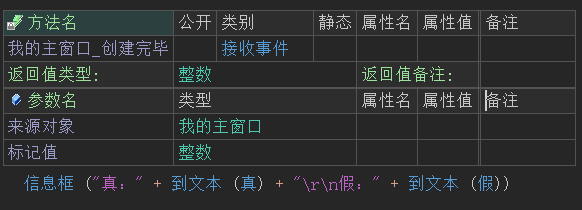
运行结果：
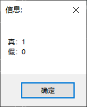
如果想要重新转换为逻辑值，可以使用“文本到逻辑值()”方法转换。
在“文本到逻辑值()”方法的帮助页中可以看到，只要参数提供“真”、“true”、“1”结果值都会返回真，其它任意文本都会返回假。
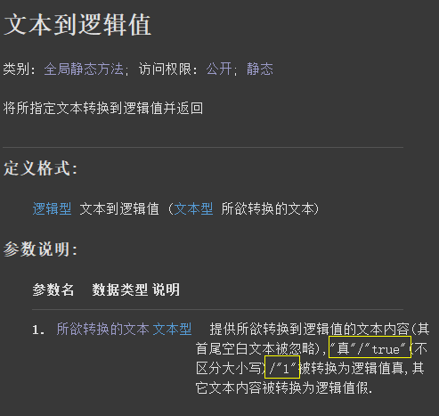
因此想要结果返回真，正确的方式就是从如下三个方法中选择其中一个即可。
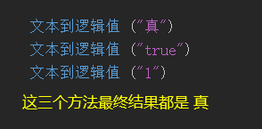
1.8 时间日期型
在火山中可用小数可代替此类型，易语言和火山视窗对比如下：
易语言如下：
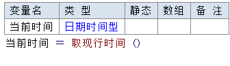
火山视窗如下：
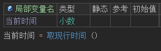
1.9 子程序指针
火山视窗中无此类型，可用变整数代替。
变整数概述：在编译64位程序时等效于长整数类型，编译32位程序时等效于整数类型。在火山视窗中，变整数用来表示指针类数据。
除此之外在易语言中使用“& + 子程序名”来表示子程序指针，在火山视窗中则不需要输入“&”符号。
对比如下图所示：
易语言：
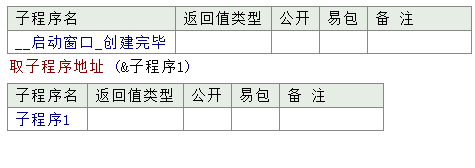
火山视窗：
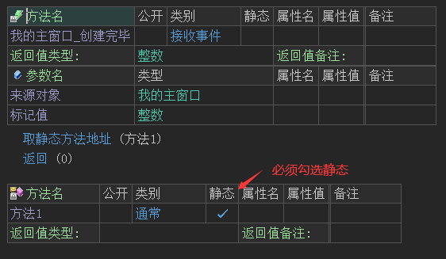
1.10 文本型
易语言的文本型为多字节编码，火山视窗的文本型编码为Unicode字符编码。虽然编码不同，但是作用都是用作记录一段字符串文本，使用立即数表达时需要在文本的左右两边使用英文双引号括起来。
如下图所示：
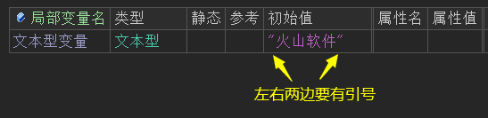
文本型中支持\n、\t等转义符操作，例如：在文本中使用“\r\n”可以表示换行，有效等同于易语言中的“#换行符”。
易语言换行符：
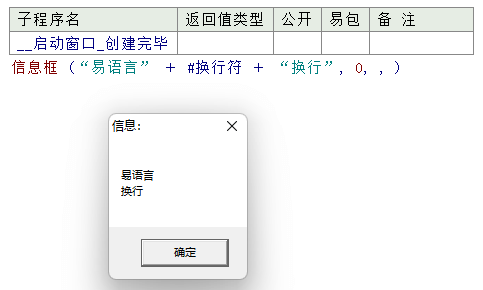
火山换行符演示：
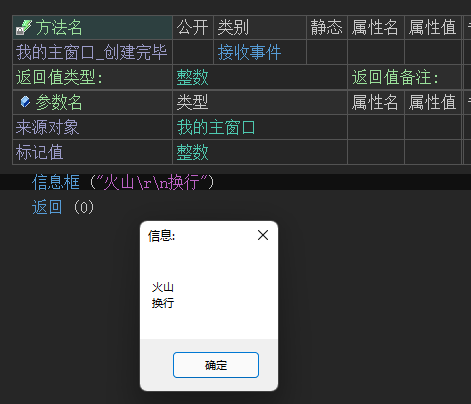
如果需要将数值型数据转换成文本型，可以直接使用“到文本()”方法即可，重新转换会目标数值型则需要对应的“文本到XX()”系列方法。
如下图所示：
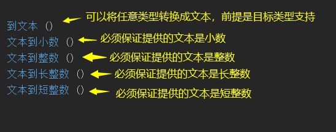
1.11 字节集
在火山视窗中名叫“字节集类”，其作用和易语言一样，都是“字节”基本数据类型的集合，用于表达二进制数据。
对比演示如下：
易语言：
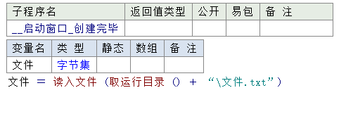
火山视窗：
注：取运行目录方法会自动添加路径符号，因此引用文件时不需要额外加路径符。
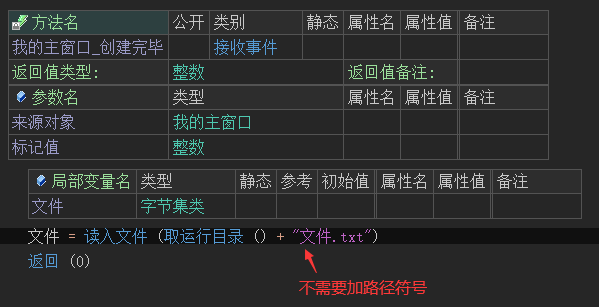
如果将文本数据转换成二进制数据需要注意文本编码问题。
火山视窗中使用“文本到字节集()”转换出来的文本编码是“UTF-16LE”(也就是常说的Unicode编码，万国码)。
而易语言的“到字节集 ()”转换的编码为多字节编码（GBK、ansi等都是多字节编码）。
易语言和火山视窗常用字符集编码转换对照表：
易语言 火山 注释 文本到UTF8() 文本到UTF8() 表示将文本转换成UTF-8编码字节集 文本到UTF16() 文本到字节集() / 到字节集() 表示将文本转换成UTF-16编码字节集 到字节集() 文本到多字节() 表示将文本转换成多字节编码字节集，常见的GBK，ANSI编码等都是多字节编码。 UTF8到文本() UTF8到文本() 表示将UTF-8编码字节集重新转换为文本数据 UTF16到文本() 字节集到文本() 表示将UTF-16编码字节集重新转换为文本数据 到文本() 多字节到文本() 表示将多字节编码字节集重新转换为文本数据
1.12 字符
字符为火山新增类型，火山中的字符为宽字符，有效值范围从0到65535，占用2个字节空间。字符主要指包括汉字、英文字母、英文数字、标点符号等。
在火山中想要表达立即数字符，需要使用单引号''来操作，例如：'火'、'山'，字符也支持转义符，譬如'\n'。
注：火山平台使用Unicode-16(即双字节统一码)字符编码格式。
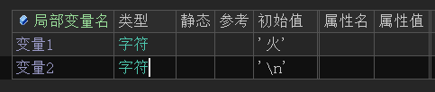
1.12.1 字符转整数
在火山视窗中，可以通过强制转换实现将字符转换成对应的整数值。
代码编写如下图：
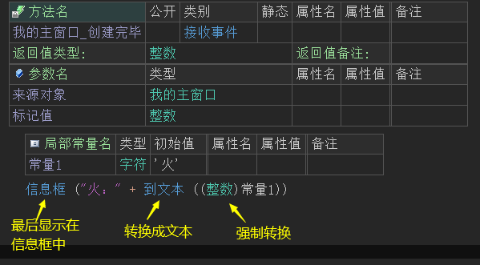
运行结果如下图：
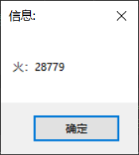
1.12.2 整数转字符
当字符被转换成整数后，如果想要重新转换成字符也可通过强制转换进行操作。
代码编写如下图：
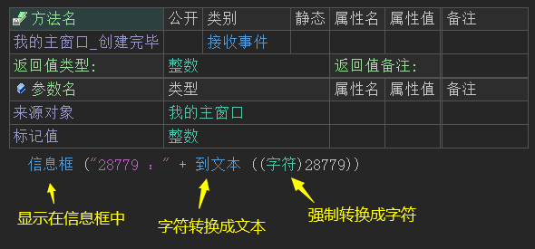
运行结果如下图：
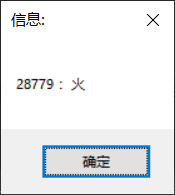
1.12.3 文本取字符
在火山视窗平台中直接调用“取字符()”方法就可以取出一串文本中指定位置的字符。
帮助文档如下图：
方法中提供了两个参数。
参数1：用于提供要取字符的文本。
参数2：提供索引位置值即可，位置从0开始。
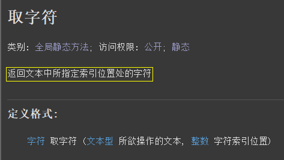
代码编写如下图：
直接调用本方法提供对应参数就可以获取指定位置字符。
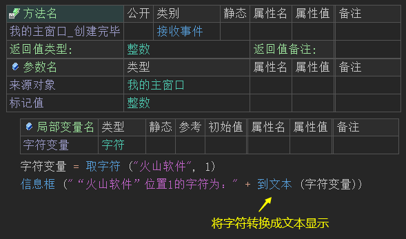
运行结果如下图：
最终可以看到指定位置的字符被取出。
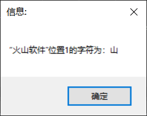
1.13 模板类型1~模板类型8
注意: 本类型为火山新增类型，普通用户知道即可，无需深入了解。
模板数据类型，只能在模板基础类中使用。
模板数据类型本身并不是真实存在的数据类型，所对应的真实数据类型需要由模板实现类来提供。
我们举个例子，假设我们需要开发一个数组操作类，用作支持对各种数组类型进行操作，如果不使用模板类型，那么我们需要写很多类似的类：
整数数组操作类、小数数组操作类、文本数组操作类等等……
而这些类的处理代码是完全一样的,唯一不同之处就是其所操作的数据类型不同，使用模板类型，我们可以把所有代码都放到模板基础类里面，然后定义对应的模板实现类即可。 如:
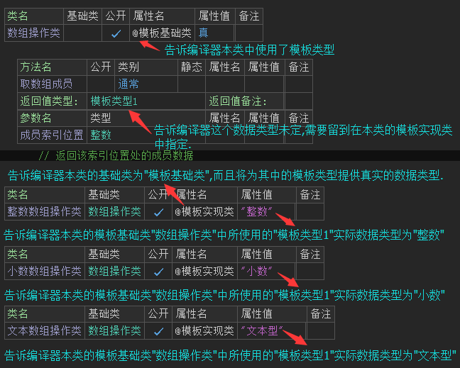
这样能大大减少工作量，也能让程序具有更好的可维护性(只需维护一处即可)。
对于火山普通用户而言，不需要深入了解如何具体定义这些模板类型，掌握如何使用已有模板类型即可。
假设有下面这段代码：
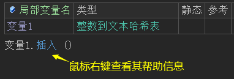
当你右键单击末语句行上的“插入”方法，然后选择查看其帮助菜单项后，看到帮助页面中参数部分为以下内容：
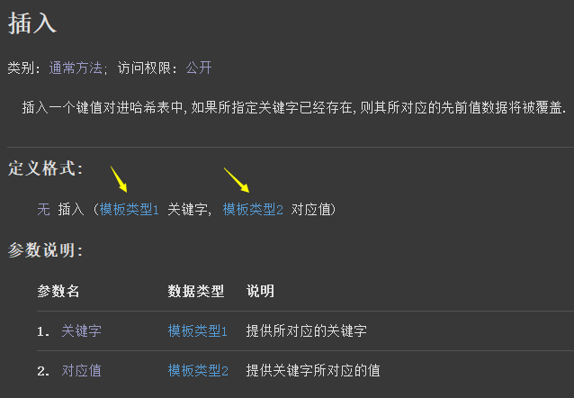
你一定会感到困惑，“模板类型1”和“模板类型2”所对应的真实数据类型到底是什么呢？
很简单，请继续单击该“模板类型1”/“模板类型2”链接，譬如点击前者将看到如下页面：
根据“变量1”的当前数据类型“整数到文本哈希表”，就可以得知，“模板类型1”当前所对应的真实数据类型为“整数”，这就是“插入”方法第一个参数提供的真实数据类型。
利用同样的方法，可以得知“插入”方法的第二个参数的实际类型为“文本型”。
由此可得出如下正确的调用代码：
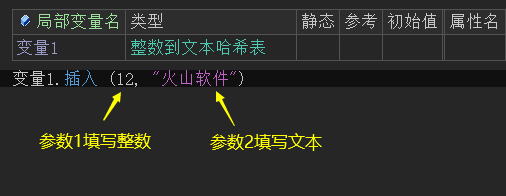
2.1 基本数据类型包装类
所有基本类型包装类如下：
1. 字节类；
2. 短整数类；
3. 整数类；
4. 长整数类；
5. 变整数类；
6. 小数类；
7. 字符类；
8. 逻辑型类；
在火山视窗平台中，由于基本数据类型数据暂不支持以参考的方式传递到方法参数上，从而导致在被调用方法中不能以修改参数值的方式来对外返回基本数据类型数据。
这些包装类的作用就是为了方便上述操作。
如下所示：
打开“整数类”的帮助页，可以看到会存在一个名叫“值”的成员变量，而这个变量的类型就是“整数”。
如果你使用的是“长整数类”，那么这个变量的类型就是长整数。
“Ctrl+D”插入一个方法后，设置一个“整数类”的参数并赋值。
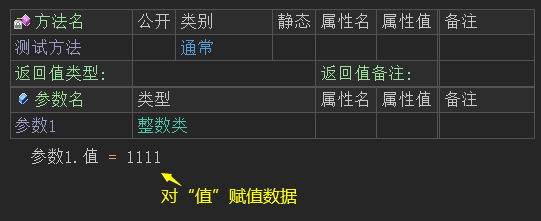
在窗口“创建完毕”事件下调用这个方法，定义“整数类”变量并传参，最后取出整数类中的值。
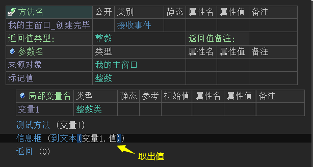
最终可以看到值被取出，也就间接实现了基本数据类型参数返回数据。
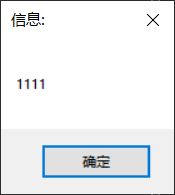
2.2 对象类
对象类是火山中所有类的最底层基础类，无论是自定义的类，还是火山系统库中的类，都会继承对象类。
如下所示：
火山视窗平台：
如果在实际开发过程中，遇到某个方法的参数是“对象类”，并且没有特别的注释，就代表这个参数可以提供任意的对象类数据进去。
例如：在火山视窗平台“对象数组类”的“加入成员()”方法就需要提供对象类的数据，本类为最基本的对象类数组。
如下所示：
如果想从对象数组类中取出对象，取出的数据是对象类，需要使用强制转换操作。
如下所示，必须保证强制转换的类型与添加时的类型一致：